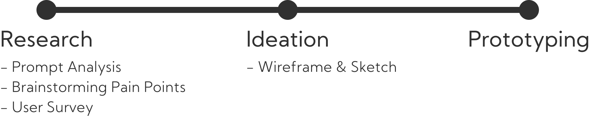
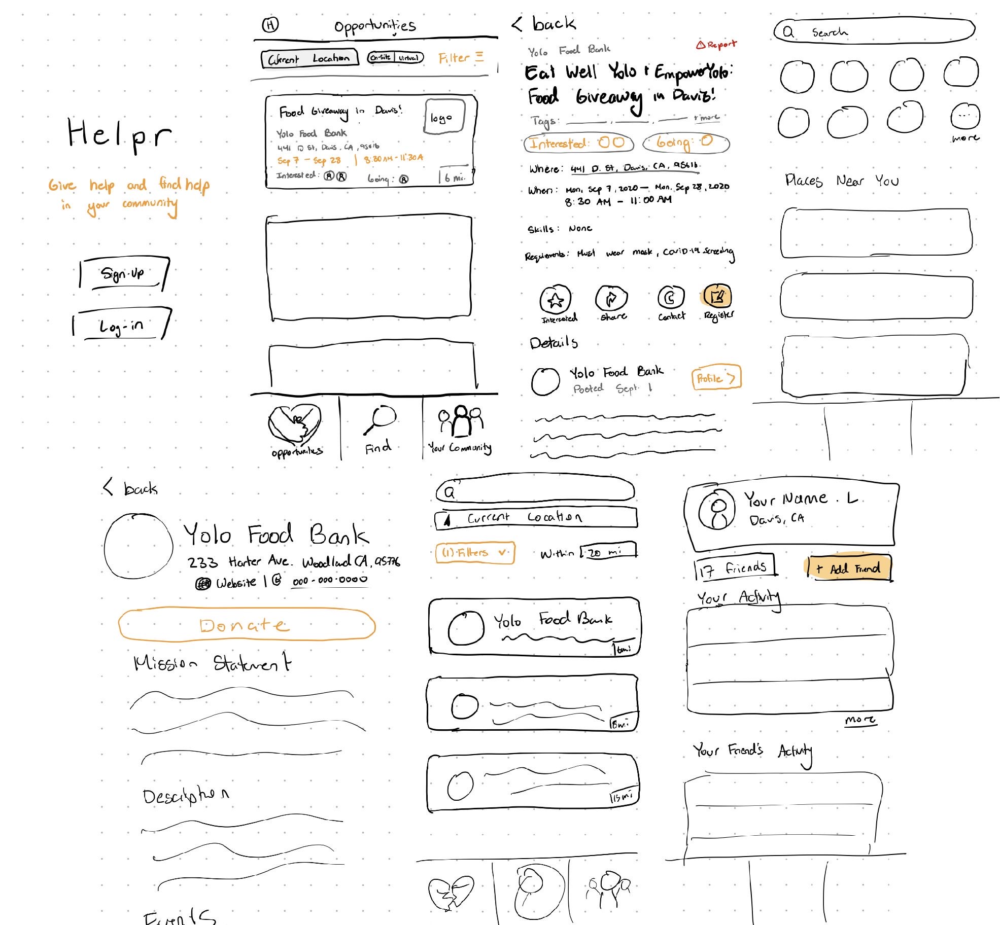

Give and find help in your community
With the COVID-19 pandemic enforcing safety guidelines and restrictions to the public, many people have been at a loss of resources–whether it be income or even toilet paper. Particularly, underserved communities are hurt the most from this and may rely on public resources more than ever before.
Helpr is an app that connects users to local resources and volunteer opportunities in their local communities. Users can discover, share, and connect with organizations and nonprofits near them whether they want to volunteer their service or are in need of resources.
The Challenge
The COVID-19 pandemic has further impeded resources and support towards vulnerable populations in our local communities including the homeless, low-income populations, and families affected by natural disasters. As volunteer opportunities due to the pandemic have increased, outreach is more limited and less centralized than before quarantine, making it harder for volunteers to find opportunities.
The Solution
A mobile app that serves as a central hub for local volunteer events, non-profits, and resources for both potential volunteers and the communities that need these resources and support. Volunteers can also track their enrolled opportunities and connect with fellow volunteers in their communities.
Prototype Overview
Find local resources and volunteer opportunities
Whether you're looking for support or want to volunteer, you can find all your local volunteering events and organizations in one screen. You can also toggle virtual volunteer opportunities if you prefer!
You can also see your friends who are interested in or going to volunteer for certain places.

Learn about the events and organizations in your community
Expand details on certain events to learn more about the volunteer opportunity and support provided. Sign up, mark as interested, or share with your friends!

Find what you're looking for
Looking for something specific? You can filter your search to find exactly what you're looking for!

Project Timeline
Designathon Details
This project was done independently as a submission for the Just Design Designathon which took place from September 18 to September 20. The total duration of project development was 42 hours.
The Just Design Designathon is an event hosted by UC Davis' Design Interactive and UC Santa Cruz's Creative Tech Design.
The theme of the whole event is designing for social justice, and most of the project submitted for this revolved around this theme.
Participants could either collaborate on a project in groups or individually. I worked alone on my project submission.
Design Process
Research
At the start of the designathon, all participants were given the following prompt to get them started with their projects:
"As designers, you have a huge amount of responsibility but also a lot of power in using a human-centered process to explore, test, and polish solutions for problems in the world. Decide on the issue that you as a team want to tackle, do some research to help you gain empathy on the stakeholders involved, and design a screen-based solution that might work!"
Upon brainstorming user pain points and themes to revolve my project around, I decided to focus on volunteer work and local community based resources. To better understand the pain points and empathize with users surrounding this topic, I decided to send out a survey as a Google Form
Research Analysis
Of the 57 respondents to our survey, I saw that:
- 78.9% of respondents were either not very aware or not aware at all of nonprofit organizations in their communities
- 87.7% of respondents were either not very aware or not aware at all of volunteer opportunities in their communities
- 43.9% of respondents did not know where to start if they wanted to start volunteering
- 73.7% of respondents would consider volunteering and/or donating more if opportunities were more easily accessible
From this collected data, I took away that:
- Most people have little to no awareness of organizations and/or nonprofits in their communities
- Most people don't know where to start with volunteering if they had the chance to
- More people would be inclined to support their communities given that opportunities are more easily accessible
Ideation
After collecting user data and interpreting the results, I began ideating some key features that I wanted to implement that directly targeted the pain points highlighted from my survey results. I knew that I wanted the following in my product:
- A dashboard type interface that highlights local resources and volunteer opportunities closest to the user's location
- Easily access basic information regarding volunteering opportunities and the organization(s) hosting them
- Expand details on events and be able to register directly, mark as "interested", or share with friends
- Connect with friends to see what opportunities they're interested in or planning to participate in
- Simple search function to find specific resources or organizations catering to specific communities utilizing tags and filters
Wireframe & Sketch
After collecting user data and interpreting my findings, I got to work on making wireframe sketches of the screens including all of the ideated features in mind. I used my iPad to make digital sketches of screens and the main interactions that would occur between each screen.
Prototyping
Individual User Setup
For this interaction, I wanted the flow to be as smooth and streamline as possible by adding a progress bar at the bottom of the screen so that users know what the sign up process looks like holistically.
Organization User Setup
If hosting events, groups can also make accounts and get verified as long as they provide the necessary information. Similar to how accounts get verified on social media, this can ensure that other users can ensure the safety and validity of organizations.
Opportunities Dashboard
This page displays local volunteering opportunities and organizations near the user's location that they can get quick information on or expand to view more details. There is a tab at the top to open up opportunities that are virtual as well to promote accessibility towards those who would prefer to volunteer that way.
Volunteering Opportunity Page
When opening up details on a specific volunteering opportunity, they can access all the necessary information to learn more about the event, the organization, and the tags associated with the event. Users can also share the event with friends or mark the event as "Interested" so that their friends using the app can see.
Search Function
Users can filter their search for local organizations that tailor to their own needs. From here, users can learn more about the organizations near them and connect with them.
User & Community Page
Users can access and edit their profile which holds their activity, interested opportunities, and the user's friend's activity. Your community can be expanded by adding more friends and making more connections.

Challenges and Reflections
Time restraint
This was my first time participating in a designathon, so I've never had this short of a timespan to complete the project. Because of this, I could not go that in depth with the design process as I've done with past projects, and I didn't have the time to do any testing and iterations. Nonetheless, I was able to conduct user research, create a wireframe, and produce a high-fidelity prototype in the short time span I was given.
Working Alone
While most other projects in this designathon were in groups, I decided to take on the challenge of making this a personal project of mines, so I worked completely alone in the design process for this. I did, however, reach out to my friends and peers to help me conduct my research and help me with my ideation stage.
Reflection
This project was definitely the most challenging one I've ever done so far since the timeline was so short and I was working alone. Throughout this entire designathon though, I've learned so much from making mistakes and confronting unique challenges with this project that I don't think I could have gotten to experience anywhere else. Although I did not win any awards for this designathon, I was extremely humbled to see the winners and the amazing products they've created. Seeing all of the other projects done by other groups reminded me that there is a lot for me to learn with work like this. Nonetheless, I am immensely proud of this project and I hope to do something like it again soon.